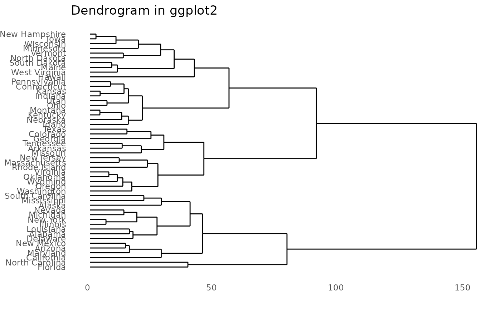

This is a convenience function
ggdendrogram( data, segments = TRUE, labels = TRUE, leaf_labels = TRUE, rotate = FALSE, theme_dendro = TRUE, ... )
Arguments
| data | Either a dendro object or an object that can be coerced to class
dendro using the |
|---|---|
| segments | If TRUE, show line segments |
| labels | if TRUE, shows segment labels |
| leaf_labels | if TRUE, shows leaf labels |
| rotate | if TRUE, rotates plot by 90 degrees |
| theme_dendro | if TRUE, applies a blank theme to plot (see
|
| ... | other parameters passed to |
Value
A ggplot2::ggplot() object
See also
Examples
### Demonstrate ggdendrogram library(ggplot2) hc <- hclust(dist(USArrests), "ave") # Demonstrate plotting directly from object class hclust p <- ggdendrogram(hc, rotate = FALSE) print(p)ggdendrogram(hc, rotate = TRUE)# demonstrate converting hclust to dendro using dendro_data first hcdata <- dendro_data(hc) ggdendrogram(hcdata, rotate = TRUE, size = 2) + labs(title = "Dendrogram in ggplot2")